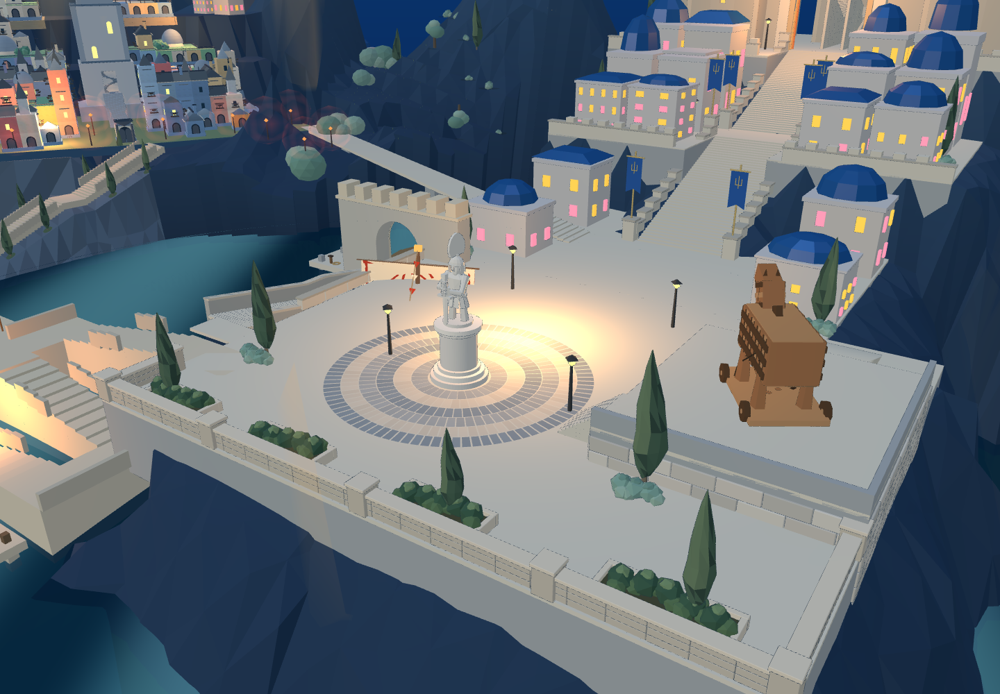
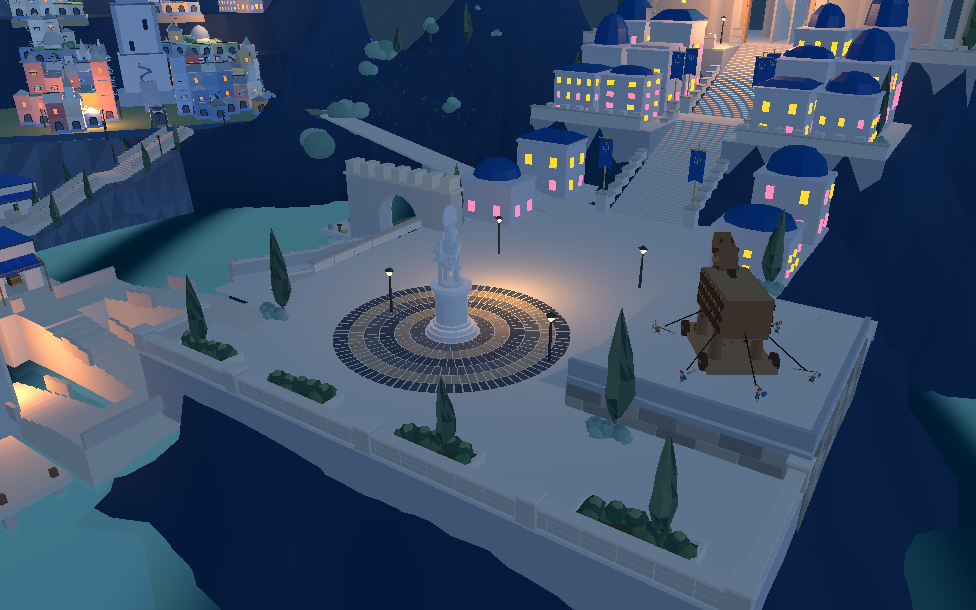

广场前缘石墙与沿墙植被
已进入 8931 原游戏 和同一 Godot 工程。保留开放的雕像广场、圆台、六圈铺砖和原木马。

实际网页：沿临水边缘补齐石墙、转角和四处花池；三株既有 Blender 柏树分组布置。 修改前同一机位：前缘没有石墙和种植带。
修改前同一机位：前缘没有石墙和种植带。
Godot 实际场景，同步后的前缘。石墙由 Blender 完成窄倒角，2个合并材质面、5676三角形。港口上行入口保持开放。Godot 原短剑兵202段通路通过，网页广场1406采样与相关3255通路采样通过。Godot证据 · 网页证据
这一批完成广场前缘；下层岩壁与平台的整体比例、旧城悬空植被、主堡轮廓及完整战斗仍待推进。